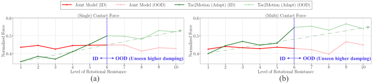

Simulation
We first validate the proposed reward design by comparing a tactile model, Tac2Motion that uses tactile observations and Joint model that relies solely on proprioceptive observations. Subsequently, we provide the comparative results across all methods, including the recent method to open a lid provided by [7] as a baseline. Evaluation metric involves rotation score and adaptability, and all models are trained for $100$M steps with ten random seeds in a single-object setting and a multi-object setting (e.g. 11 objects) sampled from lid height and radius ranges of $[0.005, 0.02]$ m and $[0.025,0.04]$ m, respectively. For training, we uniformly sample the surface friction coefficient and rotational damping coefficient of the lid from $[0.01, 1.0]$ and $[1.0,3.0]$, respectively. Lastly, we further demonstrate the applicability of the proposed framework in a different scenario, lever opening as a supplementary case.

Reward Design Validation
more
less
We evaluate the proposed reward design under single and multi-object settings with two different observation settings: Joint model and Tac2Motion. As shown in Fig. 2(a) and (b), we observe that the proposed reward shaping enables both models to successfully learn the lid opening task for 1.5 hours. Although both models can learn the task, as indicated by the increasing rewards, Tac2Motion achieves superior task performance compared with Joint model. Since both policies share the same reward design and training setup, this performance gap results from the use of additional tactile information, such as contact state, slippage, grasping force, and rotational resistance. This richer tactile information allows the agent to better distinguish diverse environment settings during rollouts. The simulation results under two settings show that tactile observations are particularly effective for adapting to object interaction dynamics that cannot be reliably inferred from proprioception alone. In addition, the proposed reward design can be generalized to various objects with different heights and radii.
Validation Metrics
more
less
We assess the performance of each method under two metrics: average rotation score, defined as the average change in the lid angle, $\Delta q^{\textnormal{lid}}$, and adaptability. We test all models over ten seeds with 10 environments per seed under two object settings, uniformly sampling surface friction and rotational damping from both In-Distribution (ID) and Out-of-Distribution (OOD) ranges. For OOD setting, we set the rotational damping coefficient from $[3.0, 4.0]$.
Task Performance
more
less
For each model trained with a single object with radius, $r=0.04$ and height, $h=0.02$, Tac2Motion achieves superior rotation performance compared with Base model and Joint model as shown in Fig. 2(c). Since Base model is trained without tactile-aware rewards, it shows very limited performance in environments with high rotational resistance levels, which supports the effectiveness of the proposed reward design. Furthermore, to investigate generalization performance of each method, we train and evaluate each method on ten objects. Similarly, under the multi-object setting, Tac2Motion consistently outperforms the other methods in terms of rotation performance, further supporting its generalization capability across diverse objects with varying properties such as size, as shown in Fig. 2(d).

Adaptability
The key advantage of Tac2Motion is the adaptability to object interaction dynamics such as surface friction and rotational resistance. To validate its adaptability, we plot average normalized contact forces of each method under both single and multi object settings over the level of rotational resistance. Note that Base model is excluded from this evaluation, as adaptability is not considered in its reward design. As shown in Fig. 3(a), under the single-object setting, Tac2Motion generally increases the average of the contact force across all fingertips as the level increases under ID and OOD settings, whereas Joint model does not. This is because the performance gap comes from the tactile-aware observation since the two models share the same reward design and hyperparameters. As a result, this adaptability leads to superior rotation performance during rollout, consistent with the results observed previously. Similarly, as shown in Fig. 3(b), Tac2Motion shows a similar trend under the multi-object setting, further supporting its adaptability and generalization across diverse object properties. These simulation results imply that both tactile-aware rewards and tactile observations are important for establishing adaptive force finger gaiting.